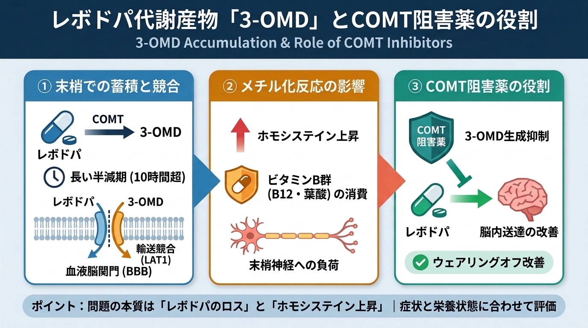

3-O-メチルドパ（3-OMD）とは何か｜レボドパ代謝・COMT阻害薬・ホモシステイン・神経障害（原寸拡大）
パーキンソン病のレボドパ治療で生じる代謝物 3-O-メチルドパ（3-OMD）の全体像をまとめたインフォグラフィックです。画像をタップすると原寸のPNG画像（1376×768 px）が開きます。
全体要約：レボドパ治療と 3-O-メチルドパ（3-OMD）

パーキンソン病のレボドパ治療で生じる代謝物 3-O-メチルドパ（3-OMD）の全体像をまとめたインフォグラフィックです。画像をタップすると原寸のPNG画像（1376×768 px）が開きます。
